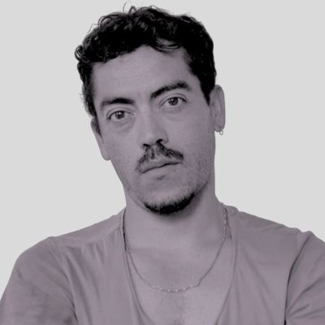

Director
We explore nature and urbanity to create a unique cinematographic dimension, capable of creating powerful discourses that invite us to reflect on who we are and how we live.
Creator and producer of performing and audiovisual art. He lives in Valparaíso, Chile.
His fascination with the narrative potential of the movement of bodies, images and sounds has led him to experiment in dramaturgy, scriptwriting, storytelling, direction, stage design and assembly, cinematography, acting and dance. He has written and directed plays, performances, magazines, short films and music videos.
From 2009 to 2019 he was producer and director of the stage company Turba.
In 2018 he created dEUSeXmACHINAfilms. The short film “Misoginia PANDORA” was screened at over 15 festivals and was awarded Best Film at the IMAGITARI DANCE FESTIVAL INDONESIA. The music video “Al aire el río” by the band SUBE won the Animal and Environmental Film Festival Mexico. With Heidi Duckler Dance he produced the short film “ESCAPE”, screened at over 10 festivals and received an honorable mention at the MEXICO CITY VIDEODANCE FESTIVAL.
He practices contemporary dance and is a member of the mundomoebio company, with which he has performed in Argentina, Peru, Chile, Brazil, Canada, and China.